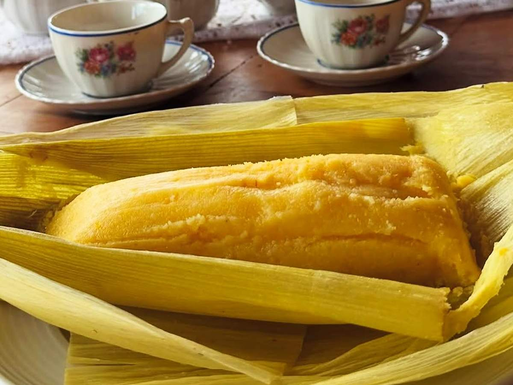

CONHEÇA MAIS SOBRE:
OS PRATOS TÍPICOS DA REGIÃO DO NORDESTE

Empadão Goiano
Goiás
Empadão Goiano
O empadão goiano é uma grande torta recheada com ingredientes como frango, linguiça, queijo, azeitona e guariroba. Tornou-se um dos símbolos da culinária goiana e possui forte presença nas cidades históricas do estado.

Arroz com Pequi
Goiás
Arroz com Pequi
O pequi é um fruto característico do Cerrado e possui grande importância cultural para Goiás. Seu sabor marcante tornou o arroz com pequi uma das preparações mais conhecidas do estado. O prato representa a relação entre a culinária goiana e os produtos encontrados no bioma.

Galinhada com Pequi
Goiás
Galinhada com Pequi
A galinhada já é uma preparação tradicional baseada em arroz e frango. Em Goiás, o prato ganhou uma identidade própria com a adição do pequi. Essa combinação tornou-se uma representação da culinária rural e dos ingredientes do Cerrado.

Pamonha
Goiás
Pamonha
A pamonha é feita principalmente com milho verde, preparado e cozido geralmente dentro da própria palha. Sua origem está relacionada a conhecimentos indígenas, e a receita ganhou grande importância na cultura rural de Goiás. O próprio nome é associado ao tupi pamunã.

Caldo de Piranha
Mato Grosso
Caldo de Piranha
Preparado com piranha e outros temperos, o caldo está ligado à forte presença dos rios e do Pantanal na alimentação regional. O consumo de peixes de água doce é uma característica marcante da culinária do Centro-Oeste.

Mojica de Pintado
Mato Grosso
Mojica de Pintado
A mojica é um ensopado preparado com pintado, mandioca e temperos. O prato representa bem a relação entre os peixes dos rios e a mandioca, dois elementos muito importantes na alimentação tradicional do Centro-Oeste.